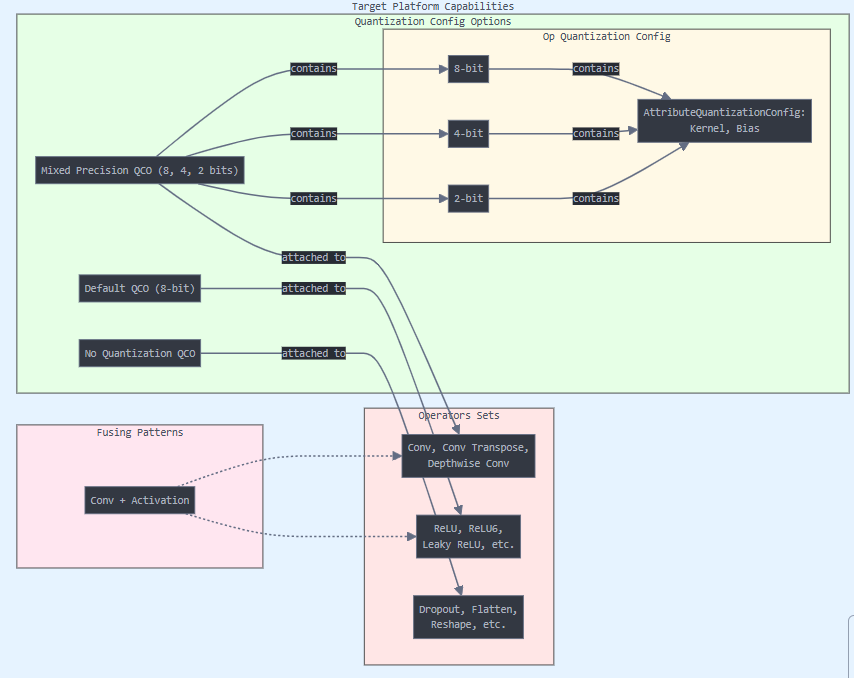

target_platform_capabilities Module¶
MCT can be configured to quantize and optimize models for different hardware settings. For example, when using qnnpack backend for Pytorch model inference, Pytorch quantization configuration uses per-tensor weights quantization for Conv2d, while when using tflite modeling, Tensorflow uses per-channel weights quantization for Conv2D.
This can be addressed in MCT by using the target_platform_capabilities module, that can configure different parameters that are hardware-related, and the optimization process will use this to optimize the model accordingly. Models for IMX500, TFLite and qnnpack can be observed here, and can be used using get_target_platform_capabilities function.
Note
For now, some fields of OpQuantizationConfig are ignored during
the optimization process such as quantization_preserving, fixed_scale, and fixed_zero_point.
MCT will use more information from
OpQuantizationConfig, in the future.
The object MCT should get called TargetPlatformCapabilities (or shortly TPC). This diagram demonstrates the main components:
{kind=link}
Now, we will detail about the different components.
QuantizationMethod¶
- class model_compression_toolkit.target_platform_capabilities.QuantizationMethod(value)¶
Method for quantization function selection:
POWER_OF_TWO - Symmetric, uniform, threshold is power of two quantization.
LUT_POT_QUANTIZER - quantization using a lookup table and power of 2 threshold.
SYMMETRIC - Symmetric, uniform, quantization.
UNIFORM - uniform quantization,
LUT_SYM_QUANTIZER - quantization using a lookup table and symmetric threshold.
OpQuantizationConfig¶
- class model_compression_toolkit.target_platform_capabilities.schema.mct_current_schema.OpQuantizationConfig(**data)¶
OpQuantizationConfig is a class to configure the quantization parameters of an operator.
- Parameters:
default_weight_attr_config (AttributeQuantizationConfig) – A default attribute quantization configuration for the operation.
attr_weights_configs_mapping (Dict[str, AttributeQuantizationConfig]) – A mapping between an op attribute name and its quantization configuration.
activation_quantization_method (QuantizationMethod) – Which method to use from QuantizationMethod for activation quantization.
activation_n_bits (int) – Number of bits to quantize the activations.
supported_input_activation_n_bits (Union[int, Tuple[int, ...]]) – Number of bits that operator accepts as input.
enable_activation_quantization (bool) – Whether to quantize the model activations or not.
quantization_preserving (bool) – Whether quantization parameters should be the same for an operator’s input and output.
fixed_scale (Optional[float]) – Scale to use for an operator quantization parameters.
fixed_zero_point (Optional[int]) – Zero-point to use for an operator quantization parameters.
simd_size (Optional[int]) – Per op integer representing the Single Instruction, Multiple Data (SIMD) width of an operator. It indicates the number of data elements that can be fetched and processed simultaneously in a single instruction.
signedness (Signedness) – Set activation quantization signedness.
Create a new model by parsing and validating input data from keyword arguments.
Raises ValidationError if the input data cannot be parsed to form a valid model.
AttributeQuantizationConfig¶
- class model_compression_toolkit.target_platform_capabilities.schema.mct_current_schema.AttributeQuantizationConfig(**data)¶
Holds the quantization configuration of a weight attribute of a layer.
- weights_quantization_method¶
The method to use from QuantizationMethod for weights quantization.
- Type:
- weights_n_bits¶
Number of bits to quantize the coefficients.
- Type:
int
- weights_per_channel_threshold¶
Indicates whether to quantize the weights per-channel or per-tensor.
- Type:
bool
- enable_weights_quantization¶
Indicates whether to quantize the model weights or not.
- Type:
bool
- lut_values_bitwidth¶
Number of bits to use when quantizing in a look-up table. If None, defaults to 8 in hptq; otherwise, it uses the provided value.
- Type:
Optional[int]
Create a new model by parsing and validating input data from keyword arguments.
Raises ValidationError if the input data cannot be parsed to form a valid model.
QuantizationConfigOptions¶
- class model_compression_toolkit.target_platform_capabilities.schema.mct_current_schema.QuantizationConfigOptions(**data)¶
QuantizationConfigOptions wraps a set of quantization configurations to consider during the quantization of an operator.
- quantization_configurations¶
Tuple of possible OpQuantizationConfig to gather.
- Type:
Tuple[OpQuantizationConfig, …]
- base_config¶
Fallback OpQuantizationConfig to use when optimizing the model in a non-mixed-precision manner.
- Type:
Optional[OpQuantizationConfig]
Create a new model by parsing and validating input data from keyword arguments.
Raises ValidationError if the input data cannot be parsed to form a valid model.
TargetPlatformCapabilities¶
- class model_compression_toolkit.target_platform_capabilities.schema.mct_current_schema.TargetPlatformCapabilities(**data)¶
Represents the hardware configuration used for quantized model inference.
- default_qco¶
Default quantization configuration options for the model.
- operator_set¶
Tuple of operator sets within the model.
- Type:
Optional[Tuple[OperatorsSet, …]]
- tpc_minor_version¶
Minor version of the Target Platform Configuration.
- Type:
Optional[int]
- tpc_patch_version¶
Patch version of the Target Platform Configuration.
- Type:
Optional[int]
- tpc_platform_type¶
Type of the platform for the Target Platform Configuration.
- Type:
Optional[str]
- add_metadata¶
Flag to determine if metadata should be added.
- Type:
bool
- name¶
Name of the Target Platform Model.
- Type:
str
- is_simd_padding¶
Indicates if SIMD padding is applied.
- Type:
bool
- SCHEMA_VERSION¶
Version of the schema for the Target Platform Model.
- Type:
int
Create a new model by parsing and validating input data from keyword arguments.
Raises ValidationError if the input data cannot be parsed to form a valid model.
OperatorsSet¶
- class model_compression_toolkit.target_platform_capabilities.schema.mct_current_schema.OperatorsSet(**data)¶
Set of operators that are represented by a unique label.
- name¶
The set’s label (must be unique within a TargetPlatformCapabilities).
- Type:
Union[str, OperatorSetNames]
- qc_options¶
Configuration options to use for this set of operations. If None, it represents a fusing set.
- Type:
Optional[QuantizationConfigOptions]
- type¶
Fixed type identifier.
- Type:
Literal[“OperatorsSet”]
Create a new model by parsing and validating input data from keyword arguments.
Raises ValidationError if the input data cannot be parsed to form a valid model.
Fusing¶
- class model_compression_toolkit.target_platform_capabilities.schema.mct_current_schema.Fusing(**data)¶
Fusing defines a tuple of operators that should be combined and treated as a single operator, hence no quantization is applied between them.
- operator_groups¶
A tuple of operator groups, each being either an OperatorSetGroup or an OperatorsSet.
- Type:
Tuple[Union[OperatorsSet, OperatorSetGroup], …]
- name¶
The name for the Fusing instance. If not provided, it is generated from the operator groups’ names.
- Type:
Optional[str]
Create a new model by parsing and validating input data from keyword arguments.
Raises ValidationError if the input data cannot be parsed to form a valid model.
OperatorSetGroup¶
- class model_compression_toolkit.target_platform_capabilities.schema.mct_current_schema.OperatorSetGroup(**data)¶
Concatenate a tuple of operator sets to treat them similarly in different places (like fusing).
- operators_set¶
Tuple of operator sets to group.
- Type:
Tuple[OperatorsSet, …]
- name¶
Concatenated name generated from the names of the operator sets.
- Type:
Optional[str]
Create a new model by parsing and validating input data from keyword arguments.
Raises ValidationError if the input data cannot be parsed to form a valid model.